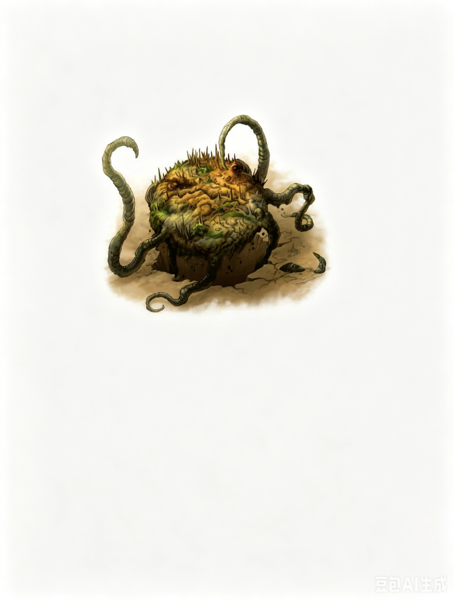

超大型植物生物 | 挑战级数 12四周的灌木似乎活了过来，一道巨大的身影从地底冲出。它全身覆盖着锋利的尖刺，周身挥舞着许多树枝般的触须。
橡木守卫 ―― 通常为守善阵营。
| 生命骰 | 18d8+108（207HP）；DR 10/魔法 |
| 先攻 | +0 |
| 速度 | 20 英尺 (4格)，掘地 10 英尺 (松软土壤) |
| 防御等级 | 23，接触 8，措手不及 23（�C2体型，+15天生） |
| 基本攻击/擒抱 | +13 / +33 |
| 近战攻击 | 抵撞 +23 (2d6+12) 和 2次挥击 +21 (每次1d8+6) |
| 占据/触及 | 15 英尺 / 10 英尺 |
| 特殊攻击 | 顺势斩、强力顺势斩、猛力攻击、旋风攻击、魔法打击 |
| 特殊能力 | 黑暗视觉 60 英尺、昏暗视觉、震颤感知 60 英尺；免疫：植物免疫能力；SR 24；情感链接、寻找橡木守卫 |
| 豁免 | 强韧 +18，反射 +6，意志 +7 |
| 属性 | 力量 35，敏捷 10，体质 24，智力 8，感知 13，魅力 13 |
| 技能 | 躲藏 �C8*，聆听 +1，威吓 +22，侦查 +1 |
| 专长 | 顺势斩、顽强、坚忍、强力顺势斩、多重攻击、猛力攻击、追踪、旋风攻击 (B) |
| 语言 | 理解精灵语，与900英尺内的对象建立情感链接 |
| 进化 | 19�C30HD (超大型)；31�C54HD (巨型) |
情感链接 (Su)：橡木守卫与其森林中树精 (dryad) 之间存在情感链接，可感知她们的需求与情感。此链接范围为 900 英尺。
寻找橡木守卫 (Su)：类似于感知位置 (Discern Location)；始终有效；施法者等级 18。橡木守卫仅可用此能力寻找与其处于同一位面上的其他橡木守卫。所有橡木守卫在此能力中被视为彼此熟识。
*当橡木守卫在其森林中休眠时，躲藏检定获得 +15 加值。
橡木守卫是守护树精神圣树林的凶猛卫士。这些生物极为稀有，通常只在树精的橡树遭受攻击时现身。当被唤醒时，橡木守卫只会待到将威胁清除为止，然后返回沉眠。
生态与生命周期：橡木守卫是巨大的长寿生物，象征着自然的狂怒。它们看似由巨大植被组成，几乎整个生命都处于沉睡状态，栖息于妖精树林的地表之下。橡木守卫可能沉睡数百年，其躯体表面长满草丛、灌木和小型灌木，从而掩盖其尖锐的尖刺。然而，通过情感链接，它始终与树林中的树精保持联系。一旦树精发出警报，它便如山峦般崛起，为她们而战。当威胁消失后，它将再次陷入沉睡。
橡木守卫在沉睡时不需要进食。其触须末端长有吸收组织，从树林周围的土壤中伸出以收集雨水。树精通过她们的树木为守卫者提供养分，这些树木的纤细根系会延伸至守卫者的外皮。然而，一旦橡木守卫苏醒，其凶猛的攻击会让它饥饿难耐。它会吞食被击败的敌人，有时甚至追逐逃跑的目标以满足其贪婪的食欲。
繁殖：当橡木守卫寿命达到一千年时，它会开始繁殖过程。新的守卫者最初是树精之树的一颗橡果，它会在"亲代"守卫者体内的一个腔囊中孵化。在此过程中，橡果吸收亲代身体的养分，而亲代则从树林中获取更多养分补充自身。橡果逐渐转变为一个胚胎状的守卫者，最终变成类似蛋的状态。
经过近一个世纪的发育，新守卫者长到亲代体型的四分之一，其腔囊会明显膨胀。最终，新守卫者破体而出，导致亲代死亡。亲代的尸体为新守卫者提供了成长的初始养分，之后新守卫者接替旧守卫者的职责。
有时，会有两个橡果同时被孵化，从而使新生的守卫者之一可以离开保护另一片树林。这一切不会孤立发生。树林中的树精会照顾年老的守卫者，安慰它并向它告别，同时帮助新守卫者适应新的生活。
体型与适应性：橡木守卫的体型取决于其年龄、树林的规模以及消灭的敌人数目。反之，如果树林受到威胁，守卫者的体型可能会缩小，因为它们更重视树林的健康（以及依赖树林的树精）而非自身的利益。在极端情况下（例如干旱），守卫者甚至可能允许自己饿死，以保证橡树的生存。
环境：橡木守卫居住在与其保护的树精相同的温带森林中。它们的存在通常由环绕树林的"妖精圆环"标志出来，这些实际上是守卫者肢体末端的蘑菇状组织。某些橡木守卫的变种可能栖息于其他类型的环境。例如，山精 (Oread) 可能拥有一只"岩石守卫"，从一块魔法宝石中成长而来，作为守护者。溪瀑之灵 (Fossergrim) 的瀑布下方可能栖息着一只"瀑布守卫"，沉睡在瀑布边缘的岩石下方。
典型身体特征：橡木守卫是一种巨大的圆盘状生物，直径可达 15 英尺，重量约 5 吨。从其身体以大致相等的间隔伸出六根柔韧的触须状肢体，可根据需要用作手臂或腿。其身体呈木质状，类似暴露在外的树根，顶部长有如短矛般的尖刺。在大多数情况下，橡木守卫的身体覆盖着泥土和植被，远远看去仿佛大地复苏了一般。
守卫者身体中央的上表面看起来像一张巨大的愤怒面孔，这让它在战斗中显得更具威慑力。它有一个巨大的嘴巴，仿佛木头裂缝般参差不齐，用以吞噬被击败的敌人。它的"眼睛"实际上是对光和热敏感的突起，可以让它像视力生物一样精准定位敌人。橡木守卫无性别，其繁殖方式如上述描述。
阵营：橡木守卫天性和平，这从它们与树精的联盟中可见一斑。然而，在保护树林时，它们会毫不留情，根据树精的需求决定是否攻击入侵者。因此，大多数橡木守卫是守善阵营。少数不属于此阵营的通常是绝对中立。如果树林中的树精堕落，其守卫者也可能变得邪恶。
社会：橡木守卫是独居的生物，但与树林中的树精及其树木有着紧密的联系。这种联系既是物质上的――它们靠保护的树木提供养分维持生命，也是精神上的――通过共享的心灵与情感纽带联结在一起。橡木守卫视自己为大自然防线的支柱，并对保护神圣树林的能力充满自信。由于彼此相隔甚远且大部分时间处于沉睡状态，橡木守卫并未形成自己的群落。然而，它们通过某种梦境链接，潜意识中彼此感知对方的情绪与忧虑。
个体橡木守卫并没有名字，而是通过其守护的对象进行自我识别。例如，一位居住在湖边树林、守护两名树精的守卫者可能被称为"双姊湖"。
作为森林的守护者，橡木守卫会立即攻击任何敌意入侵者，除非有树精或其他精类在场安抚它们。橡木守卫通常藏匿于森林地表下的植被中，当入侵者大多或全部进入其攻击范围时，它会突然从地面升起发动攻击。
它们充分利用自身的巨大体型和强大力量，使用猛力攻击以造成最大伤害。橡木守卫的多个肢体既可作为腿使用，也可作为攻击武器。当面对一两个敌人时，它会以四肢移动，用其他两肢进行攻击。当面对大量敌人时，它更倾向于停留在原地，利用旋风攻击清扫敌人。在同时面对超过四名敌人时，它通常结合猛力攻击与旋风攻击使用，此时抵撞攻击加值为+12，伤害为 2d6+23。
与橡木守卫交战意味着成为树精及其圣树的敌人。树林中的树精会为守卫者提供支持，附近的树人 (treants) 和其他森林守护者也可能加入战斗。有时，树精会采取激进的姿态，吸引旅者卷入敌对，即使这些人本无恶意。在此类情况下，橡木守卫仍会前来协助树精。
守护者 (EL 12)：一棵树精之树的根须已完全包裹住一件神圣遗物，而这件遗物是抵御恶魔入侵的唯一希望。树精不愿冒生命危险取出遗物，但她的沉默呼救却唤醒了树林中的守护者。
双守卫 (EL 14)：一支行军中的军队在古老森林边缘扎营，一队士兵开始无视树精的存在砍伐树木取材。兵力过多，树精的类法术能力无法对他们起作用，树林中的守卫者也无法独自击败他们。第二个守卫者出现，协助保护这片受袭击的森林。
橡木守卫本身并不收集宝藏，但它们保护的树精则会将守卫者击退威胁后遗留的有用物品保存下来。这些树精可能拥有双倍于其挑战等级标准的财宝。
在艾伯伦：在艾伯伦的埃鲁登原野 (Eldeen Reaches)，古老的觉醒树木将这片土地视为家园，其中栖息着各种各样的精类生物。塔林森林 (Towering Wood) 的西部是一片连接着瑟兰尼斯 (Thelanis) 的显能区域。在这里，精类力量得到了增强，橡木守卫的体型通常更大且数量更多。据传，这片土地上的妖精圆环与土丘孕育出了最早的橡木守卫。
森林的长老守护者 (Wardens of the Wood) 通过心灵联系，与橡木守卫协作加强森林的防御。相传，欧里安 (Oalian) 会在守卫者的梦境中与其交谈，而传说中唤醒巨松的护门者德鲁伊 (Gatekeeper Druid) 正是创造这些守卫者的始作俑者。
在费伦：梅丽凯 (Mielikki) 的追随者尊崇树精和其他森林精类，并将培育橡木守卫视为一种神圣职责。在四季盛宴 (Four Feasts) 期间，信徒们向树精的树林献上花蜜，并小心地将其倒入妖精圆环周围。新守卫者的诞生是一件罕见而喜庆的事情，但伴随着旧守卫者逝去的伤感。当年轻守卫者定居在一片此前未被保护的树林中时，当地的梅丽凯牧师与德鲁伊会举办名为"绿家 (Greenhome)"的庆祝节日。在为期三天的节庆中，人们祈祷并献上食物，同时为树林和守卫者服务。
三名树精居住在古老树林深处的一片崎岖山坡上，一只橡木守卫保护着它们。
1. 妖精圆环：一片空地位于古树之间，低矮的浆果灌木丛散布其中，五彩缤纷的蘑菇形成直径 30 英尺的环状。这片"蘑菇"包围的区域是树林守护者的休憩之地，灌木丛环绕着守卫者背上的尖刺。妖精圆环的一部分延伸至陡峭山坡上。守卫者醒来时，可以选择向水平面方向冲出山坡以获得地形优势。
2. 树精之树：三棵宏伟的橡树显然与周围森林的树木有所不同。每棵树精之树与此处的入口相连。每棵树都是一位树精的家，她们将自身伪装成普通的橡树。除非入侵者破坏树木或进行其他破坏性活动，树精通常保持伪装状态，等待入侵者离开。如果遭遇威胁，她们会使用深度睡眠 (Deep Slumber) 和魅惑人类 (Charm Person) 对付敌人，仅在无法应对的情况下召唤橡木守卫协助。
拥有 自然知识 (Knowledge (Nature)) 技能的角色可以了解更多关于橡木守卫的信息。成功的技能检定可以揭示以下内容，包括较低 DC 的信息：
DC 15：这是一只橡木守卫，一种凶猛且智慧的植物生物。此结果揭示所有植物生物的特性。
DC 22：橡木守卫是一种罕见的生物，负责保护树精的树林，并大部分时间处于沉睡状态。它们的寿命可超过一千年。
DC 27：橡木守卫对非魔法武器造成的伤害具有很高的抗性。
DC 32：橡木守卫能够在任何距离感知彼此，从而在需要时互相支援。